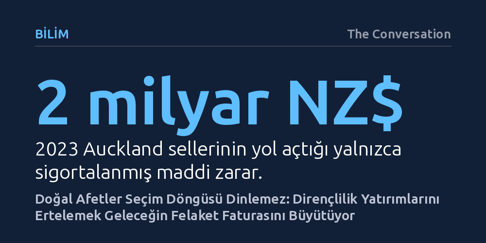

BILIM · The Conversation · 2026-10-19
Doğal afet dirençliliğine yatırılan her bir dolar gelecekteki sekiz dolarlık zararı önlerken, riskli alanlardaki denetimsiz yapılaşma felaket faturalarını katlıyor. Uzmanlar, afet yönetiminin seçim döngülerinden çıkarılıp kalıcı bir devlet politikasına dönüştürülmesini zorunlu görüyor.
Afetlerin faturasını hafifletmenin yolunun felaket sonrası yardımlardan değil, seçim hesaplarını aşan uzun vadeli dirençlilik yatırımlarından ve riskli alanları imara kapatmaktan geçtiğini gösteriyor.

Her seçim döneminde siyasi partiler kaçınılmaz olarak ekonomi, sağlık, konut krizi ve kamu harcamaları gibi tanıdık gündem maddelerine odaklanır. Ancak sandıktan hangi hükümet çıkarsa çıksın, ülkenin sınırlarını çizen ve tüm bu alanları doğrudan etkileyen çok daha büyük bir meydan okuma kapıda bekliyor: Doğal afetler ve iklim kırılganlığı. Doğal afet riskleri, seçim beyannamelerinde yer bulsun ya da bulmasın, konutların nereye inşa edileceğinden sigorta primlerine, toplumun genel refahından gelecek nesillere devredilen kamu borçlarına kadar her şeyi derinden belirliyor.
Yeni Zelanda'nın jeolojik ve coğrafi yapısı; ülkeyi seller, tsunamiler, kıyı erozyonu, şiddetli fırtınalar, depremler, heyelanlar, orman yangınları ve kuraklıklar karşısında olağanüstü savunmasız kılıyor. Üstelik iklim krizi derinleştikçe ve plansız kentsel büyüme sürdükçe, toplumun ve altyapının bu tehlikelere maruz kalma düzeyi hızla tırmanıyor. Yalnızca 2023 yılında Auckland'da yaşanan fırtına ve sel felaketinin sigortalı maddi hasarı 2 milyar Yeni Zelanda dolarını aştı. Bu rakam bile buzdağının yalnızca görünen yüzü; zira felaketin ardından ortaya çıkan altyapı tahribatı, ekonomik durgunluk ve toplum sağlığı üzerindeki kalıcı yaralar çok daha ağır bir tablo ortaya koyuyor.
Bir nesil önce bilim insanlarının en büyük hedefi Yeni Zelanda'nın doğa olaylarını ve tehlike profilini haritalandırmaktı. Bugün ise tehlike modellemeleri, risk haritaları ve yapay zekâ destekli iklim tahminleri konusunda muazzam bir bilimsel birikim mevcut. Ancak veri ve modeller tek başına güvenliği sağlamaya yetmiyor. Asıl kritik eşik, üretilen bilimin sahadaki imar ve yatırım kararlarına dönüştürülebilmesinde yatıyor.
Bilgiye erişim tarihin en yüksek seviyesindeyken dahi ülke yönetimi, insanları ve kritik altyapıyı afet riski yüksek bölgelere yerleştirmeye devam ediyor. Kamu politikalarındaki bu çelişki, kısa vadeli ekonomik büyüme arayışı ile uzun vadeli belirsiz riskler arasındaki gerilimden besleniyor. Örneğin Güney Auckland'da taşkın yatağı olduğu bilinen bir alanda binlerce yeni konut inşa edilmesini öngören proje, yerel yönetimin itirazlarına rağmen merkezi hükümetin "hızlı imar onayı" sürecinden geçirildi ve konu yargıya taşındı. Bürokratik süreçleri kısaltıp konut arzını hızlandırmak cazip görünse de güvenlik barajlarını zayıflatmak, geleceğin felaketlerine bizzat davetiye çıkarıyor.
Felaketlerin ardından yaraları sarmak, tehlikeyi henüz gerçekleşmeden önlemekten çok daha pahalıya mal oluyor. Bugün Auckland Konseyi ve hükümet, yaşam için tahammül edilemez risk taşıyan 1.100'den fazla konutu tahliye edip geri satın almak amacıyla yaklaşık 1,25 milyar Yeni Zelanda doları kaynak ayırmak zorunda kaldı. Oysa en baştan bu arazilere inşaat izni verilmemiş olsaydı, böylesi devasa bir kamu kaynağı heba edilmeyecekti.
İktisadi analizler, afet dirençliliğine ve koruyucu altyapıya yatırılan her 1 doların, gelecekte ortaya çıkacak 8 dolarlık hasarı önlediğini gösteriyor. Bu durum, meşhur deyişteki gibi uçurumun tepesine sağlam bir çit çekmek ile uçurumun dibinde cankurtaran bekletmek arasındaki farkı andırıyor. Siyasiler mali disiplinden ve tasarruftan sıkça söz etseler de dirençlilik yatırımlarını ertelemek tasarruf sağlamıyor; aksine gelecekteki faturaları katlayarak vergi mükelleflerinin sırtına yüklüyor. Nitekim sigorta şirketi IAG'nin yayımladığı bir raporda açıkça belirtildiği üzere, "doğal afet riski Yeni Zelanda'nın bu riski yönetme kapasitesinden daha hızlı yükseliyor."
Doğal afet dirençliliği yalnızca beton bariyerler inşa etmekten ibaret değildir; sürekli bakım, yetkin kadroların korunması ve toplumun kriz anındaki reflekslerinin diri tutulmasını gerektiren dinamik bir süreçtir. Fiziksel altyapı yaşlanır, koruyucu setler bakım ister ve afetler arasında geçen uzun sakin dönemlerde toplumsal hazırlık bilinci körelir. Kaynak kısıtları nedeniyle yatırımları felaket anına kadar ertelemek, kaçınılmaz bir yıkım döngüsü yaratır.
Yeni hükümet hangi afetlerle karşılaşacağını seçemez; ancak toplumun bu tehlikelere ne ölçüde maruz kalacağını, zararların kimin omzuna yükleneceğini ve toparlanma sürecinin ne kadar adil işleyeceğini belirleyebilir. Bu mücadele yalnızca merkezi yönetimin veya konut sektörünün omzunda da değildir; yerel Māori topluluklarının afet yönetimindeki kritik rolü ve özel sektörün sorumlulukları da denkleme katılmalıdır. Afet riskini seçim döngülerinin sığ hesaplarından kurtarıp kalıcı bir ulusal dirençlilik stratejisine dönüştürmek, önümüzdeki on yılın en hayati siyasi sınavıdır.